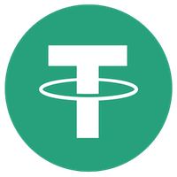

Add with icon
wallet_watchAssetWhy this page exists. Explorer and store listings sit in review queues. This page skips them: it asks the wallet to add the token and passes the logo in the same request, so the wallet stores and displays it immediately. No listing, no wait.

Trust Wallet — get the icon now
The app does not read an icon from this site, so the listing has to be merged first. Two things bypass that wait, and both put the real logo in the app:
- Deep link — tap the Trust Wallet app button on the contract you hold. It opens the add-asset sheet inside the app.
- DApp browser — Trust Wallet → DApps → paste this page's URL → use Add to wallet. The request carries the logo, and the app stores it with the asset.
Open the homepage in the app rather than on desktop if the button does nothing — a desktop browser has no Trust Wallet to hand the request to.
Add a contract
Pick the deployment you hold. The wallet shows a confirmation — the logo is inside that request.

Add the whole list instead
Wallets that read token lists can be pointed at tokenlist.json. Every entry carries its own logo URL, so one list addition covers all three and survives edits.
If the button does nothing
- Open this page in the wallet's own browser (Trust Wallet → DApps → paste the URL), or in a desktop browser with MetaMask installed.
- You must be on BNB Smart Chain. The page offers to switch; approve it.
- Adding a token is always a manual confirmation inside the wallet — the button only prepares it.